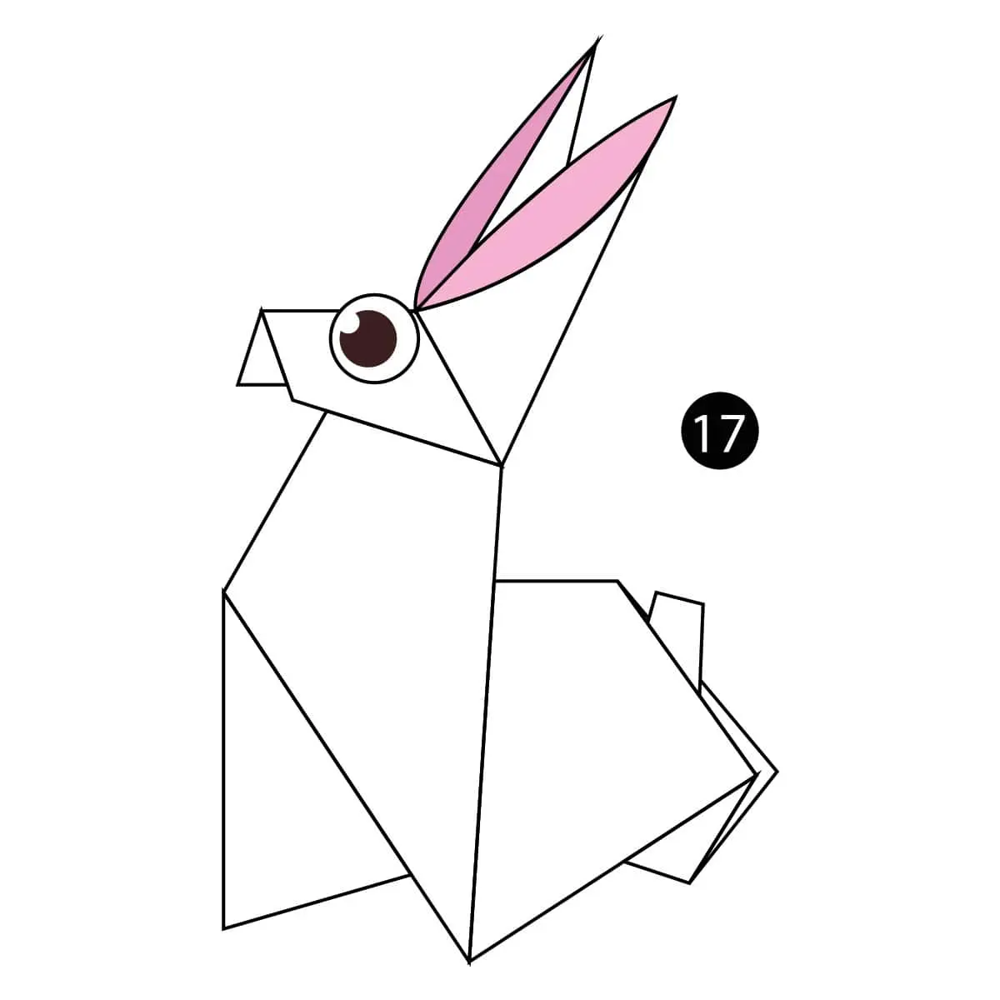

1. CAMEL

FACTS YOU SHOULD KNOW:-
- Their humps let them store up to 80 pounds of fat which they can live off for weeks and even months!!
- When a camel finally does find water, he can drink up to 182 liters in one go.
- Camels are very strong and can carry up to 900 pounds for 25 miles a day.
2. CHAMELEON

FACTS YOU SHOULD KNOW:-
- Chameleons consist of a dozen named genera and over 200 individual species.
- They have over 200 Species
- Do you know "Chameleon" Means "Ground Lion"
*it was shocking for me😅*
3. PIGEON

FACTS YOU SHOULD KNOW:-
- Pigeons have excellent hearing abilities. They can detect sounds at far lower frequencies than humans are able to, and can thus hear distant storms and volcanoes.
- Pigeons and humans have lived in close proximity for thousands of years. The first recordings of this date back to Mesopotamis, modern Iraq, in 3000bc.
- Although pigeon droppings are seen by some as a problem in modern society, a few centuries ago pigeon guano was seen as extremely valuable.
4. TEDDY-BEAR

FACTS YOU SHOULD KNOW:-
- The first British Teddy Bear Festival was held in 1989 in London
- Do you know what to call a person who is too fond of or loves collecting teddy bears? – Arctophile, which combines the Greek words arctos (bear) and philos (loving/fond of).
- There is myth that Winnie the Pooh was based on a real bear *personally, I don't know if it is true or false*
5. RABBIT

FACTS YOU SHOULD KNOW:-
- There are more than 30 species around the world, and while they live in many different environments, they have many things in common.
- Rabbits and hares are in the same taxonomic family, Leporidae, but they are in different genera.
- Rabbits are very social creatures and live in large groups called colonies. The busiest time of day for rabbits is at dusk and dawn.
5. PIGEON
FACTS YOU SHOULD KNOW:-
- Pigeons have excellent hearing abilities. They can detect sounds at far lower frequencies than humans are able to, and can thus hear distant storms and volcanoes.
- Pigeons and humans have lived in close proximity for thousands of years. The first recordings of this date back to Mesopotamis, modern Iraq, in 3000bc.
- Pigeons can fly at altitudes up to and beyond 6000 feet, and at an average speed of 77.6 mph. The fastest recorded speed is 92.5 mph.